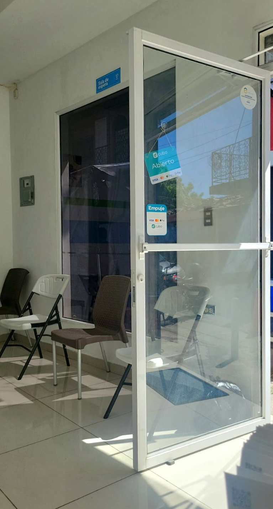
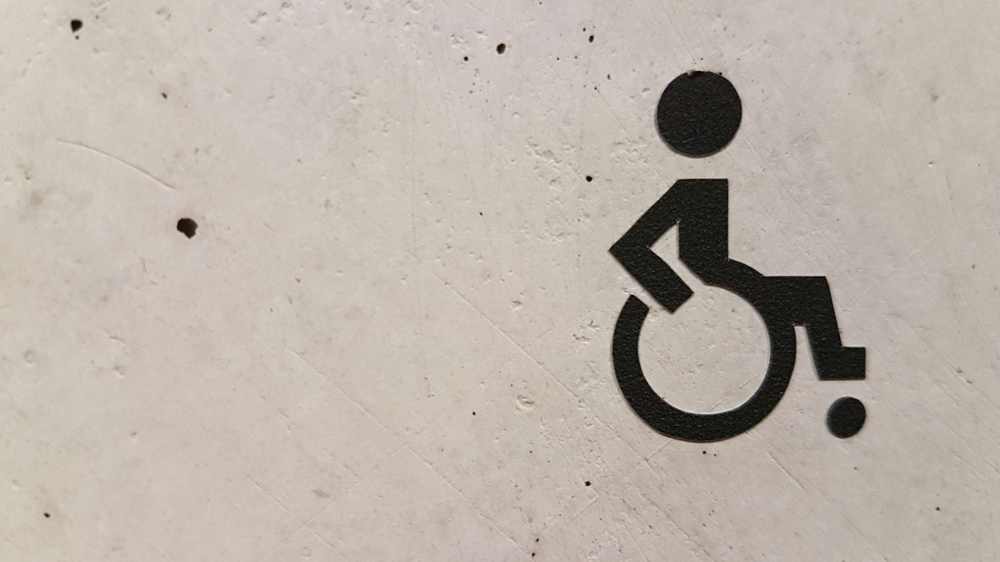
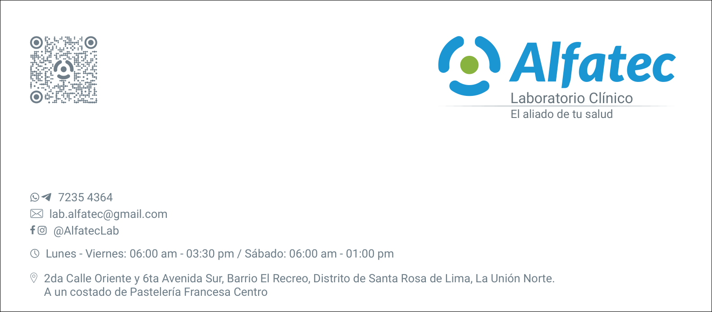

Área de recepción
Un espacio preparado para recibirte, orientarte y ayudarte a iniciar tu visita de forma ordenada.
Galería institucional
En esta galería reunimos imágenes que muestran parte de nuestras áreas, procesos y canales de atención, para que puedas familiarizarte con Laboratorio Clínico Alfatec antes de tu visita.
El aliado de tu salud
Calidad, confianza y servicio humano para el cuidado de tu salud.
Queremos que puedas conocer un poco más del entorno donde se realiza la atención. Estas imágenes muestran espacios y detalles que forman parte de la experiencia en Laboratorio Clínico Alfatec.

Un espacio preparado para recibirte, orientarte y ayudarte a iniciar tu visita de forma ordenada.
Cada atención inicia con una orientación clara, para que puedas resolver dudas y seguir el proceso con mayor tranquilidad.
Cuidamos cada etapa del trabajo interno para que el proceso se realice de manera ordenada y responsable.

Contamos con una ubicación práctica para que puedas llegar con mayor facilidad y organizar mejor tu visita.
Puedes consultarnos por nuestros canales oficiales para resolver dudas sobre horarios, indicaciones o disponibilidad.

Un proceso pensado para que recibas tu información de forma ordenada y con la orientación necesaria.
Si deseas conocer más sobre nuestros servicios o necesitas orientación antes de visitarnos, puedes comunicarte con nosotros por WhatsApp.
Consultar por WhatsApp